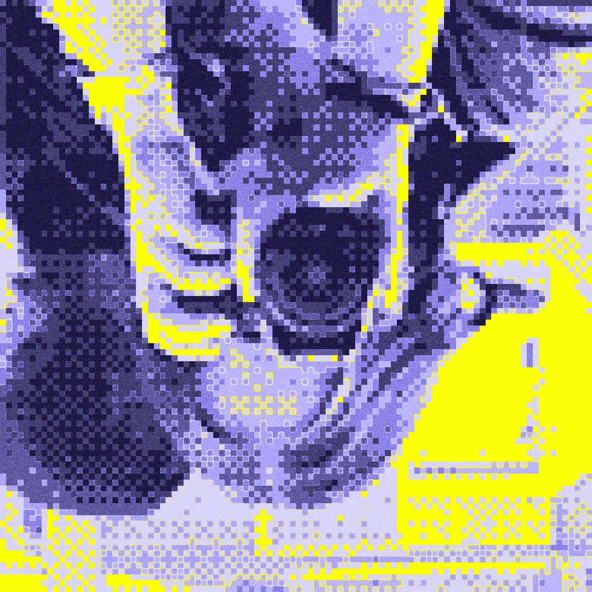

03 / PIACERE, SOFIA
About.
Una mente curiosa,
un occhio sempre acceso.
DI DESIGN · BRESCIA

CHI SONO
Dal concept
alla forma.
Sono Sofia, studentessa di Digital Design e Communication a LABA Brescia. Dopo una formazione in Graphic Design & Multimedia, continuo a esplorare il linguaggio visivo tra identità, grafica e motion.
Mi piace osservare, sperimentare e trovare il dettaglio che fa la differenza. Questo spazio raccoglie una parte del mio percorso creativo.
VAI AI PROGETTI